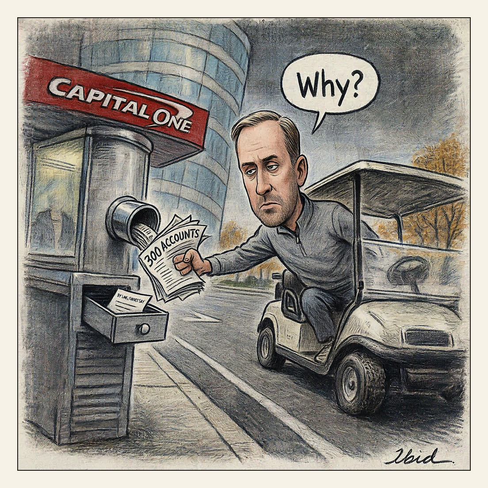

Discovery.
Drive-Thru

Capital One said in a court filing that it closed more than 300 Trump Organization bank accounts in 2021 after months of analysis by its anti-money-laundering team. It is the first time a bank has formally tied money-laundering concerns to Trump's family business, though Capital One has never accused the company of illegal activity and says the flagged transaction patterns are among those covered by federal banking guidance. The Trump Organization and Eric Trump sued in Florida in March 2025 alleging political retaliation; two complaints have been dismissed, and Capital One argues federal confidentiality law barred it from explaining the closures to the customer.